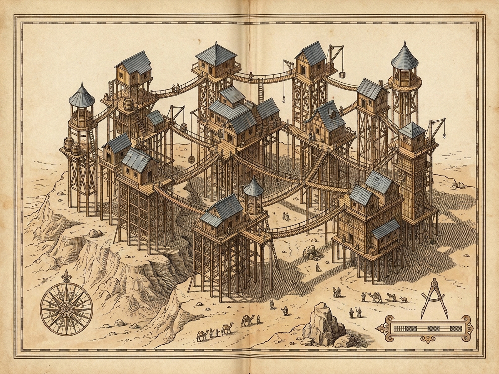
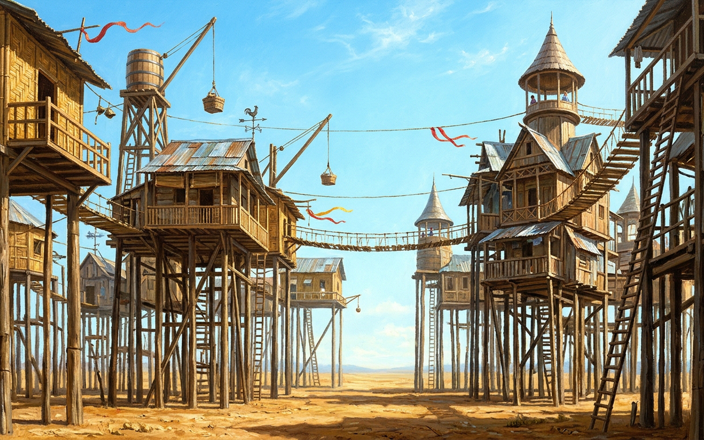

Thin Cities · II
ZENOBIA
Alt
29.1m
Mesa H₂O
0%
Cisterns
11
Catwalks
10
M
Audio
P
Plates
48m Cone
34m Span
29.1m
18m Truss
0m Dry
EElevate
CCatwalk
BBarrels
FFootings
WGust
GFlat Reset
MChimes
RReset
PPlates
Describe a Happy Life
Gen 0 · +0.0m
1Attempt Flat Stone Town
2Attempt Earthbound Avenues
3Dream Crossing Balconies
4Dream High Cone Belvederes
5Dream Vanes, Poles & Ribbons
6Ask a Zenobian About Happiness
Pilings56%
Catwalks58%
Belvederes54%
Vanes & Ribbons60%
Flat Attempts Sublimated: 0
Mean 29.1m (+0.0m)
Choose [1] or [2] to attempt founding a flat town on solid ground—and watch desire lift every block back onto higher pilings, ladders, and swaying catwalks.
✗ False Binary Rejected: Happy vs. Unhappy Cities
✓ Cities That Continue Through Years & Changes to Give Form to Desires
Opposed to: Cities in Which Desires Erase the City or Are Erased by It
Royal Plate Guild · Zenobia Archival Folio
Diptych
Cartographic Map
Architectural Plate
[Z] Loupe 1.0×
[Esc] Close

Plate I · Survey of High Pilings, Crossing Platforms & Hanging Sidewalks Over Dry Mesa (1600×1200)

Plate II · Bamboo & Oxidized-Zinc Houses, Cone Belvederes, Hoisted Cisterns, Pulleys & Ribbons (1600×1000)